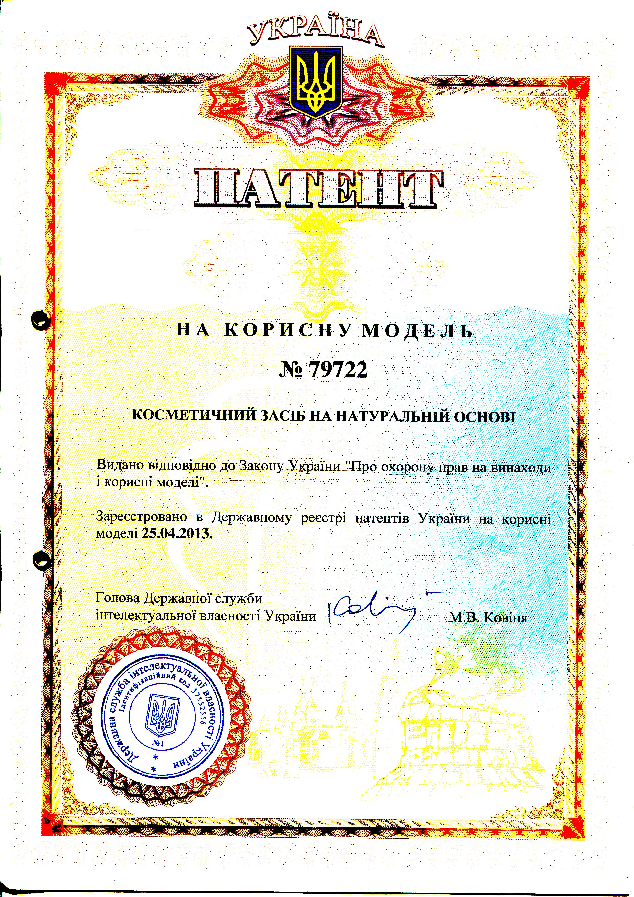
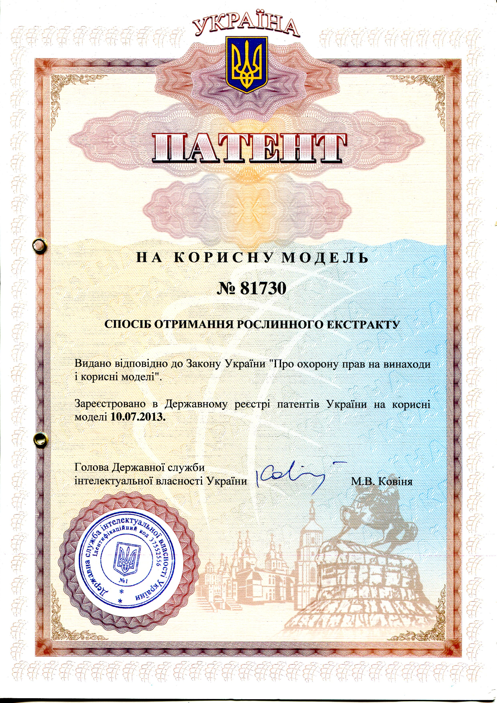

Гель на натуральной основе «Пятая Стихия» Тысячелистник
В серии гелей «Пятая Стихия» использован уникальный запатентованный метод экстрагирования лекарственных растений, ферменты которых способны, проникая через кожу, формировать гормональное зеркало и создавать в организме качественную среду, запуская процессы оздоровления и регенерации, что в результате исключает саму возможность заболеваний.
Тысячелистник – эффективное кровоостанавливающее средство, его применяют при внутренних и наружных кровотечениях и различного рода воспалениях. Ферменты тысячелистника направлены на восстановление сердечно-сосудистой системы и нормализации артериального и венозного давления, укрепления сосудов. Усиливая свертываемость крови, тысячелистник при этом действует очень мягко, не вызывая образования тромбов. Применяется при лечении: геморроя; заболеваний печени; женских заболеваний; катаров; малокровия и т.д. Эффективен при диатезах, диабете, ожирении.
В состав гелей входят исключительно натуральные компоненты, такие как:
- ферменты алоэ, как вещества с регенеративными свойствами;
- ферменты чистотела, как дезинфицирующая составляющая;
- ферменты тысячелистник, как вещества с восстановительными свойствами;
- экстракт морских водорослей (агар-агар), как вещества имеющие живительные свойства;
- садочная соль, с малым содержанием кальция, арсена и йода.
Серия «Пятая Стихия» , состоящая из гелей на натуральной основе, предназначенных для ухода за кожным покровом тела человека, повышения и улучшения свойств обновления и регенерации организма как системы взаимодействия органов, используя для этого экстракты растений, обладающих регенеративными, дезинфицирующими, антибактериальными и живительными свойствами, что приводит к повышению интенсивности обменных потоков между кожей и слоем средства, к интенсификации процессов обновление клеток повышает запасы в них необходимых для жизнедеятельности аминокислот и полисахаридов.
Применение гелей «Пятая Стихия» способствует полному восстановлению функций систем организма, что создает условия для локализации и устранения причин возникновения заболеваний.
Серия гелей «Пятая Стихия» предназначена для наружного применения. Наносится равномерно легкими массажными движениями на все тело, но особое внимание следует уделять лимфотокам, затылочной части головы и шеи, а также паховой области. Эффект кратно улучшается после предварительного разогрева тела (ванная, сауна, массаж, точечный разогрев участков). После нанесения в течение 15 минут для улучшения эффекта рекомендуется укрыться, чтобы через пот вышли токсины. Образовавшуюся соляную пленку не смывать, просто обтереть мягким полотенцем. При острых болях и воспалительных процессах можно наносить гель на пораженные участки до 5 раз в день, так как гель имеет ранозаживляющее и обеззараживающее свойство. Растительный комплекс «Пятая Стихия» в профилактических целях применяется ежедневно.
Побочные эффекты могут проявиться только при индивидуальной непереносимости компонентов.
Производитель: ООО «ГАММА КРЫМ», г. Севастополь, ул. Промышленная, 9 тел: +7978 111-91-90
Продукция производится согласно ГОСТ 31695-2012 и ТР ТС 009/2011
В серии «Пятая Стихия» использован запатентованный метод экстрагирования лекарственных растений:
1) Патент на полезную модель «Косметическое средство на натуральной основе» № 79722 от 25.04.2013;
2) Патент на полезную модель «Способ получения растительных экстрактов» № 81730 от 10.07.2013
Гель на натуральной основе «Пятая Стихия» Полынь
В серии гелей «Пятая Стихия» использован уникальный запатентованный метод экстрагирования лекарственных растений, ферменты которых способны, проникая через кожу, формировать гормональное зеркало и создавать в организме качественную среду, запуская процессы оздоровления и регенерации, что в результате исключает саму возможность заболеваний.
Горечи Полыни стимулируют жизнедеятельность организма в целом, восстанавливают кислотность, активизируют кровообращение и улучшают обмен веществ, благотворно влияют на работу желудочно-кишечного тракта и связанных с ним желез внутренней секреции, оказывая желчегонное действие, активируя выработку ферментов поджелудочной железы, благотворно влияя на секрецию желудочного сока. Хорошо известные очистительные свойства полыни помогают человеку в борьбе с паразитирующими микроорганизмами ( дрожжевые грибки, вирусы и др.)
В состав гелей входят исключительно натуральные компоненты, такие как:
- ферменты алоэ, как вещества с регенеративными свойствами;
- ферменты чистотела, как дезинфицирующая составляющая;
- ферменты полыни, как вещества с восстановительными свойствами;
- экстракт морских водорослей (агар-агар), как вещества имеющие живительные свойства;
- садочная соль, с малым содержанием кальция, арсена и йода.
Серия «Пятая Стихия» , состоящая из гелей на натуральной основе, предназначенных для ухода за кожным покровом тела человека, повышения и улучшения свойств обновления и регенерации организма как системы взаимодействия органов, используя для этого экстракты растений, обладающих регенеративными, дезинфицирующими, антибактериальными и живительными свойствами, что приводит к повышению интенсивности обменных потоков между кожей и слоем средства, к интенсификации процессов обновление клеток повышает запасы в них необходимых для жизнедеятельности аминокислот и полисахаридов.
Применение гелей «Пятая Стихия» способствует полному восстановлению функций систем организма, что создает условия для локализации и устранения причин возникновения заболеваний.
Серия гелей «Пятая Стихия» предназначена для наружного применения. Наносится равномерно легкими массажными движениями на все тело, но особое внимание следует уделять лимфотокам, затылочной части головы и шеи, а также паховой области. Эффект кратно улучшается после предварительного разогрева тела (ванная, сауна, массаж, точечный разогрев участков). После нанесения в течение 15 минут для улучшения эффекта рекомендуется укрыться, чтобы через пот вышли токсины. Образовавшуюся соляную пленку не смывать, просто обтереть мягким полотенцем. При острых болях и воспалительных процессах можно наносить гель на пораженные участки до 5 раз в день, так как гель имеет ранозаживляющее и обеззараживающее свойство. Растительный комплекс «Пятая Стихия» в профилактических целях применяется ежедневно.
Побочные эффекты могут проявиться только при индивидуальной непереносимости компонентов.
Производитель: ООО «ГАММА КРЫМ», г. Севастополь, ул. Промышленная, 9 тел: +7978 111-91-90
Продукция производится согласно ГОСТ 31695-2012 и ТР ТС 009/2011
В серии «Пятая Стихия» использован запатентованный метод экстрагирования лекарственных растений:
1) Патент на полезную модель «Косметическое средство на натуральной основе» № 79722 от 25.04.2013;
2) Патент на полезную модель «Способ получения растительных экстрактов» № 81730 от 10.07.2013
Гель на натуральной основе «Пятая Стихия» Euphrasia Officianalis (Очанка)
В серии гелей «Пятая Стихия» использован уникальный запатентованный метод экстрагирования лекарственных растений, ферменты которых способны, проникая через кожу, формировать гормональное зеркало и создавать в организме качественную среду, запуская процессы оздоровления и регенерации, что в результате исключает саму возможность заболеваний.
Ферменты Очанки способствуют очищению кровеносных сосудов, особенно капилляров, от избыточного присутствия солей и кальция, что приводит к их эластичности и существенно улучшает кровоснабжение, особенно органов зрения (Она помогает восстанавливать остроту зрения, благотворно влияет на приостановление дегенеративно-дистрофических процессов в оболочке глаза, возрастных обменных нарушений, уменьшает отечность глаз.). Исцеляющие свойства очанки доказаны при лечении различных офтальмологических заболеваний (Конъюнктивиты; Блефариты; Дакриоциститы; Повышение внутриглазного давления; Катаракта; Трахома). Улучшая кровоснабжение головного мозга. Лечебные свойства очанки проявляются при борьбе с аллергическими реакциями, экземами, диатезами.
В состав гелей входят исключительно натуральные компоненты, такие как:
- ферменты алоэ, как вещества с регенеративными свойствами;
- ферменты чистотела, как дезинфицирующая составляющая;
- ферменты очанки, как вещества с восстановительными свойствами;
- экстракт морских водорослей (агар-агар), как вещества имеющие живительные свойства;
- садочная соль, с малым содержанием кальция, арсена и йода.
Серия «Пятая Стихия» , состоящая из гелей на натуральной основе, предназначенных для ухода за кожным покровом тела человека, повышения и улучшения свойств обновления и регенерации организма как системы взаимодействия органов, используя для этого экстракты растений, обладающих регенеративными, дезинфицирующими, антибактериальными и живительными свойствами, что приводит к повышению интенсивности обменных потоков между кожей и слоем средства, к интенсификации процессов обновление клеток повышает запасы в них необходимых для жизнедеятельности аминокислот и полисахаридов.
Применение гелей «Пятая Стихия» способствует полному восстановлению функций систем организма, что создает условия для локализации и устранения причин возникновения заболеваний.
Серия гелей «Пятая Стихия» предназначена для наружного применения. Наносится равномерно легкими массажными движениями на все тело, но особое внимание следует уделять лимфотокам, затылочной части головы и шеи, а также паховой области. Эффект кратно улучшается после предварительного разогрева тела (ванная, сауна, массаж, точечный разогрев участков). После нанесения в течение 15 минут для улучшения эффекта рекомендуется укрыться, чтобы через пот вышли токсины. Образовавшуюся соляную пленку не смывать, просто обтереть мягким полотенцем. При острых болях и воспалительных процессах можно наносить гель на пораженные участки до 5 раз в день, так как гель имеет ранозаживляющее и обеззараживающее свойство. Растительный комплекс «Пятая Стихия» в профилактических целях применяется ежедневно.
Побочные эффекты могут проявиться только при индивидуальной непереносимости компонентов.
Производитель: ООО «ГАММА КРЫМ», г. Севастополь, ул. Промышленная, 9 тел: +7978 111-91-90
Продукция производится согласно ГОСТ 31695-2012 и ТР ТС 009/2011
В серии «Пятая Стихия» использован запатентованный метод экстрагирования лекарственных растений:
1) Патент на полезную модель «Косметическое средство на натуральной основе» № 79722 от 25.04.2013;
2) Патент на полезную модель «Способ получения растительных экстрактов» № 81730 от 10.07.2013
Гель на натуральной основе «Пятая Стихия» Myristica Fragrans (Мускат)
В серии гелей «Пятая Стихия» использован уникальный запатентованный метод экстрагирования лекарственных растений, ферменты которых способны, проникая через кожу, формировать гормональное зеркало и создавать в организме качественную среду, запуская процессы оздоровления и регенерации, что в результате исключает саму возможность заболеваний.
Мускат используется, как тонизирующее средство для улучшения мозговой деятельности. Способствует увеличению концентрации внимания, помогает улучшить процессы запоминания, уменьшает степень изношенности нервной системы. Именно воздействие на нервную систему и является основным наиболее сильным вектором действия мускатного ореха. Способен снимать переутомление, лишнюю раздражительность и тревожность. Используется как средство от бессонницы, депрессии и других психологических нарушений.
В состав гелей входят исключительно натуральные компоненты, такие как:
- ферменты алоэ, как вещества с регенеративными свойствами;
- ферменты чистотела, как дезинфицирующая составляющая;
- ферменты муската, как вещества с восстановительными свойствами;
- экстракт морских водорослей (агар-агар), как вещества имеющие живительные свойства;
- садочная соль, с малым содержанием кальция, арсена и йода.
Серия «Пятая Стихия» , состоящая из гелей на натуральной основе, предназначенных для ухода за кожным покровом тела человека, повышения и улучшения свойств обновления и регенерации организма как системы взаимодействия органов, используя для этого экстракты растений, обладающих регенеративными, дезинфицирующими, антибактериальными и живительными свойствами, что приводит к повышению интенсивности обменных потоков между кожей и слоем средства, к интенсификации процессов обновление клеток повышает запасы в них необходимых для жизнедеятельности аминокислот и полисахаридов.
Применение гелей «Пятая Стихия» способствует полному восстановлению функций систем организма, что создает условия для локализации и устранения причин возникновения заболеваний.
Серия гелей «Пятая Стихия» предназначена для наружного применения. Наносится равномерно легкими массажными движениями на все тело, но особое внимание следует уделять лимфотокам, затылочной части головы и шеи, а также паховой области. Эффект кратно улучшается после предварительного разогрева тела (ванная, сауна, массаж, точечный разогрев участков). После нанесения в течение 15 минут для улучшения эффекта рекомендуется укрыться, чтобы через пот вышли токсины. Образовавшуюся соляную пленку не смывать, просто обтереть мягким полотенцем. При острых болях и воспалительных процессах можно наносить гель на пораженные участки до 5 раз в день, так как гель имеет ранозаживляющее и обеззараживающее свойство. Растительный комплекс «Пятая Стихия» в профилактических целях применяется ежедневно.
Побочные эффекты могут проявиться только при индивидуальной непереносимости компонентов.
Производитель: ООО «ГАММА КРЫМ», г. Севастополь, ул. Промышленная, 9 тел: +7978 111-91-90
Продукция производится согласно ГОСТ 31695-2012 и ТР ТС 009/2011
В серии «Пятая Стихия» использован запатентованный метод экстрагирования лекарственных растений:
1) Патент на полезную модель «Косметическое средство на натуральной основе» № 79722 от 25.04.2013;
2) Патент на полезную модель «Способ получения растительных экстрактов» № 81730 от 10.07.2013
Гель на натуральной основе «Пятая Стихия» Symphytum Officinale L. (Живокость)
В серии гелей «Пятая Стихия» использован уникальный запатентованный метод экстрагирования лекарственных растений, ферменты которых способны, проникая через кожу, формировать гормональное зеркало и создавать в организме качественную среду, запуская процессы оздоровления и регенерации, что в результате исключает саму возможность заболеваний.
Живокость
Живокость способствует быстрому заживлению при переломах, вывихах, суставных растяжениях, а также при остеохондрозах, артритах, боли в спине. Эффективна при дисфункциях мочеполовой системы, дыхательных органов и пр.
Ферменты живокости способствуют восстановлению организма при истощении. Поскольку алкалоиды травы способны действовать как миорелаксанты, расслабляя скелетную мускулатуру, используется живокость полевая как противосудорожный препарат, а также при параличах.
В состав гелей входят исключительно натуральные компоненты, такие как:
- ферменты алоэ, как вещества с регенеративными свойствами;
- ферменты чистотела, как дезинфицирующая составляющая;
- ферменты живокости, как вещества с восстановительными свойствами;
- экстракт морских водорослей (агар-агар), как вещества имеющие живительные свойства;
- садочная соль, с малым содержанием кальция, арсена и йода.
Серия «Пятая Стихия» , состоящая из гелей на натуральной основе, предназначенных для ухода за кожным покровом тела человека, повышения и улучшения свойств обновления и регенерации организма как системы взаимодействия органов, используя для этого экстракты растений, обладающих регенеративными, дезинфицирующими, антибактериальными и живительными свойствами, что приводит к повышению интенсивности обменных потоков между кожей и слоем средства, к интенсификации процессов обновление клеток повышает запасы в них необходимых для жизнедеятельности аминокислот и полисахаридов.
Применение гелей «Пятая Стихия» способствует полному восстановлению функций систем организма, что создает условия для локализации и устранения причин возникновения заболеваний.
Серия гелей «Пятая Стихия» предназначена для наружного применения. Наносится равномерно легкими массажными движениями на все тело, но особое внимание следует уделять лимфотокам, затылочной части головы и шеи, а также паховой области. Эффект кратно улучшается после предварительного разогрева тела (ванная, сауна, массаж, точечный разогрев участков). После нанесения в течение 15 минут для улучшения эффекта рекомендуется укрыться, чтобы через пот вышли токсины. Образовавшуюся соляную пленку не смывать, просто обтереть мягким полотенцем. При острых болях и воспалительных процессах можно наносить гель на пораженные участки до 5 раз в день, так как гель имеет ранозаживляющее и обеззараживающее свойство. Растительный комплекс «Пятая Стихия» в профилактических целях применяется ежедневно.
Побочные эффекты могут проявиться только при индивидуальной непереносимости компонентов.
Производитель: ООО «ГАММА КРЫМ», г. Севастополь, ул. Промышленная, 9 тел: +7978 111-91-90
Продукция производится согласно ГОСТ 31695-2012 и ТР ТС 009/2011
В серии «Пятая Стихия» использован запатентованный метод экстрагирования лекарственных растений:
1) Патент на полезную модель «Косметическое средство на натуральной основе» № 79722 от 25.04.2013;
2) Патент на полезную модель «Способ получения растительных экстрактов» № 81730 от 10.07.2013
Специалисты компании «Gamma-Crimea» сформируют индивидуальный заказ с учетом всех Ваших потребностей и добавлением дополнительных компонентов, которые помогут быстро устранить проблему. В разработке индивидуальной программы задействованы профессионалы различных отраслей, которые с учетом Вашей психоматрицы и индивидуальных особенностей биоритмов Вашего организма дадут рекомендации и окажут комплексную помощь в решении проблемы.
Почему необходимо принимать «Бальзам Болотова»?
Говорит Борис Васильевич Болотов:
"Это не лечение, а устранение причин, что мы накапливаем у себя с потерей тепла организмом, с потерей соли лимфой.
Главный элемент желудочно-кишечного тракта – желудочный сок. Он обладает сильными расщепляющими свойствами. Так как 98% его всасывается обратно в кровь, то разнесенные по всему организму потоками крови желудочные ферменты начинают растворять не только все устаревшие клетки, которые попадаются на их пути, но и клетки поврежденные нитратами, радионуклидами, тяжелыми металлами, канцерогенными веществами, свободными радикалами. Не расщепляются только молодые здоровые клетки (что и надо для здоровья).
А клетки долго не живут - почечные клетки – живут 6 минут; клетки крови – трое суток; половые клетки – 10 суток; кожи – 6 месяцев; хрящи – до 1 года. В сутки у нас умирает 600 грамм клеток (полкило мяса мертвого). Его надо растворить – это может сделать только желудочный сок. А он берется из пищи. Следовательно, надо употреблять блюда, где содержатся аминокислоты - рыба, морские продукты, мясо, молочные продукты, грибы – формируют качественный желудочный сок. Когда в рационе питания не достаточно данных продуктов для поддержания кислотности организма рекомендуется принимать «Бальзам Болотова». Он является аналогом желудочного сока, количество которого в организме необходимо постоянно повышать.
Всем известен факт, что динозавры за 60 млн лет своего существования вымерли почти все, кроме небольшого количества. Вымерли главным образом растениеядные динозавры, а хищники мы наблюдаем и по сей день в виде крокодилов и аллигаторов. Основой выживаемости их является высокая кислотность желудочного сока. Было установлено, что она превышает кислотность аккумуляторов. О кислотности электролита обычно не говорят, так как она равна единице. Говорят о его плотности, которая равна 1,2 – 1,27. Так вот, у крокодила плотность электролита доходит почти до 1,37. Становится понятным, что при такой высокой кислотности крови невозможно развитие какой-либо болезни.
В целом восстановление желудочного сока до нормы и выше может вернуть Вашему организму невосприимчивость ко всяким заболеваниям, в том числе раку и СПИДу."
Деятельность:
- Производство товаров на натуральной основе
- Охрана интеллектуальной собственности
- Создание концептуальных решений для внедрения нестандартных идей
- Интегративная медецина (холистическая)
- Консультация

{kind=link}
{kind=link}
Контакты
+380 67 113 40 40 jsc.astarta@gmail.com г. Киев, ул. Б. Хмельницкого 68, к. 35Телефон
+380 67 113 40 40Почта
jsc.astarta@gmail.com
«Пятая стихия» - уникальный омолаживающий регенерационный комплекс, который разработан по запатентованной методике экстрагирования лекарственных растений. Принцип действия комплекса основан на очищении, питании и восстановлении баланса организма через самый большой орган - кожу.
В состав комплекса входит 5 саше-пакетов с гелем «Пятая стихия» (питание и регенерация организма) и «Бальзам Болотова» (очищение организма), разработанный академиком Болотовым Б.В.
«Бальзам Болотова» способствует общему омоложению организма. Он участвует в расщеплении клеток, поврежденных: нитратами, радионуклидами, свободными радикалами, канцерогенными веществами, различными ядами солей тяжелых металлов.
Гель на натуральной основе «Пятая стихия» предназначен для ухода за кожным покровом тела человека, повышения и улучшения свойств обновления и регенерации организма как системы взаимодействия органов, используя для этого экстракты растений, обладающих регенеративными, дезинфицирующими, антибактериальными и живительными свойствами. Специально разработанная комбинация натуральных ферментов активизирует выработку феромонов. Регулярное использование комплекса «Пятая стихия» позволит не только избавиться от проблем на коже, но и изменить свое эмоциональное состояние благодаря интенсивному выделению феромонов, которые способствуют привлечению внимания противоположного пола и стабильной выработке эндорфина.
Применение гелей «Пятая стихия» способствует полному восстановлению функций систем организма, что создает условия для локализации и устранения причин возникновения заболеваний.

«Бальзам Болотова»
«Бальзам Болотова» способствует общему омоложению организма. Применяется при лечении множества заболеваний как тяжелых и хронических, так и менее серьезных. Он участвует в расщеплении клеток, поврежденных: нитратами, радионуклидами, свободными радикалами, канцерогенными веществами, различными ядами солей тяжелых металлов. Расщепляет все виды раковых клеток.
Бальзам применяется:
- для стимуляции образования ферментов желудочного сока (пепсинов) и нормализации работы всего ЖКТдля стимуляции образования ферментов желудочного сока (пепсинов) и нормализации работы всего ЖКТ
- при пониженной секреции желудочного сока.
- при нулевой кислотности желудочного сока.
- для разжижения крови в кровеносной системе.
- для нейтрализации повышенного содержания сахара в крови, расщепления бляшек в сосудах и очищения их от солей жирных кислот.
- для омоложения организма, вследствие увеличения процента молодых клеток.
- для расщепления старых и больных клеток, клеток болезнетворных организмом.
- при атеросклерозе сосудов, для предотвращения инсульта, инфаркта, <аритмии class="">
- при не закрывающемся и ослабленном привратнике 12-ти перстной кишки.
- Бальзам участвует в нейтрализации свободных радикалов.
- при глистах и паразитах, дисбактериозе кишечника, кандидозе, молочнице, цистите, пиелонефрите, полипах, кистах и миомах.
- при диабете, повышеном сахаре в крови.
- лечит золотистый стафилакокк и стрептококк.
Также «Бальзам Болотова» применяют и как профилактическое средство. Он повышает иммунитет организма, что способствует уменьшению риска заболевания различными вирусными инфекциями.
Способ применения: по 1 - 2 ч. л. на ½ стакана воды (чая, кофе), а при серьезных заболеваниях по 2 ч. л. на ½ стакана жидкости 3 - 4 раза в день во время или после еды. Утром бальзам необходимо принимать натощак, т. к. он нейтрализует неблагоприятные вещества, которые скапливаются в организме человека в процессе сна и поэтому, весь день помогает чувствовать себя бодрым.
Состав: комплекс незаменимых органических кислот и аминокислот.
Противопоказания: не рекомендуется применять беременным женщинам и женщинам, кормящим грудью, а также при индивидуальной непереносимости компонентов препарата.